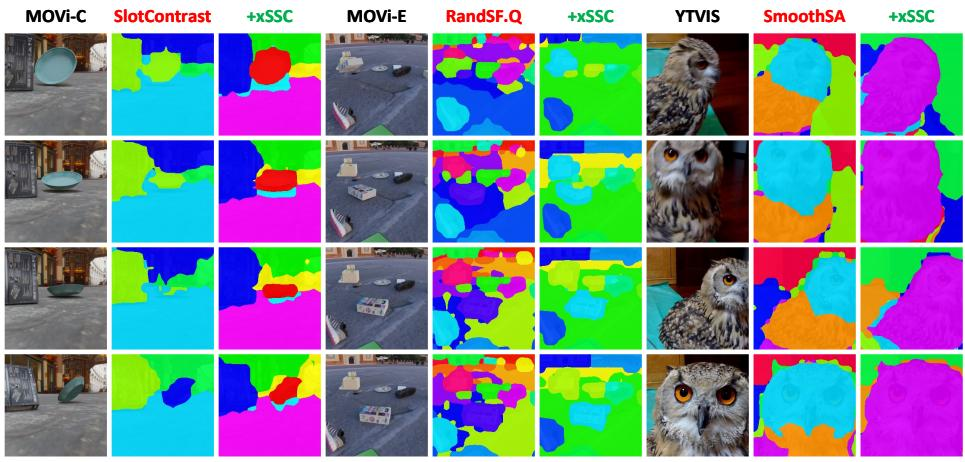

Figureure 3 · : (center ) A sample video with object discovery masks, 8 of 29 framesFig. 3: (center ) A sample video with object discovery masks, 8 of 29 frames. (left) Temporal Trajectories: slots’ static part usually clusters while the dynamic part mostly disperses. Interestingly, the purple slot’s static part also spreads, due to its noisy feature aggregation, which jumps across frames. (right) Gradient Distribution: to classify the slot that aggregates the yellow area features, more gradients come from the static channels, which verifies our design that static channels capture more invariant semantics; Similarly, to regress the ape’s bounding box, more kinematics is needed.这张图来自论文 PDF 的结构化抽取。当前用于辅助理解 Internalizing Temporal Consistency in Video 的方法或实验，请结合正文精读段落一起看。

Figureure 2 · : Object Discovery Visualization.Fig. 2: Object Discovery Visualization.这张可视化用来解释 Internalizing Temporal Consistency in Video 学到的中间表征或对齐关系。重点看它是否支持正文里的机制判断。